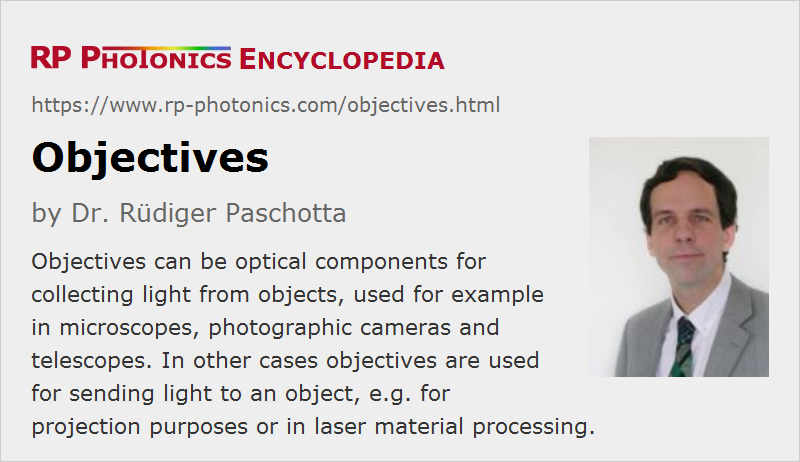

Objectives
Definition: optical elements for collecting light from inspected objects, or for sending light to objects
More specific terms: photographic objectives, microscope objectives
Opposite terms: ocular lenses
German: Objektive
Categories: general optics, vision, displays and imaging
How to cite the article; suggest additional literature
Author: Dr. Rüdiger Paschotta
Objectives are frequently understood as optical elements for collecting light from inspected objects:
- A microscope objective is the component of a microscope which is placed next to the object. Its numerical aperture is the key factor which limits the achievable image resolution of the microscope. It also substantially contributes to the magnification of the instrument, which is further increased with an eyepiece. Similar objectives are also used for optical profilometers.
- A photographic objective is the part where light enters a photo camera. There are different versions of such camera objectives, e.g. zoom objectives with a variable magnification, tele objectives for taking images from rather distant objects, macro objectives for large magnification of small close objects and wide-angle “fish eye” objectives.
- Similarly, a telescope objective collects input light for a telescope. Such devices are often optimized for viewing distant images with large magnification. The entrance diameter is important not only concerning the light gathering power, but also ultimately limiting the image resolution.
- Infrared viewers have objectives which are optimized for receiving infrared light.
- There are specialized interferometry objectives, which contain a beam splitter and a reference mirror. They are used in certain optical profilometers, for example.
In other cases, objectives are optical components for sending light to an object. For example, there are protection objectives, used e.g. in laser projection displays, and focusing objectives. It also happens, for example, that a microscope objective is used for focusing a laser beam into an optical fiber, i.e., as a focusing objective. Such objectives are often optimized for improved power handling capability.
Single-lens or Multi-lens Systems
A simple objective may essentially consist of a single lens. However, most objectives are multi-element lens systems, containing some number of lenses and often one or more optical apertures, because of the optical performance in terms of various types of image aberrations can be achieved only with a careful combination of lenses. In case of telescopes, objectives are often based on curved mirrors instead of lenses.
Single lenses, including cemented doublets and triplets, in an objective are called elements of the objective. Certain subsets of elements are often called groups.
The optical design of objectives is usually a sophisticated task, for which specialized optical design software is used. It involves trade-offs between different qualities, which should be optimized according to the specific application.
Questions and Comments from Users
Here you can submit questions and comments. As far as they get accepted by the author, they will appear above this paragraph together with the author’s answer. The author will decide on acceptance based on certain criteria. Essentially, the issue must be of sufficiently broad interest.
Please do not enter personal data here; we would otherwise delete it soon. (See also our privacy declaration.) If you wish to receive personal feedback or consultancy from the author, please contact him e.g. via e-mail.
By submitting the information, you give your consent to the potential publication of your inputs on our website according to our rules. (If you later retract your consent, we will delete those inputs.) As your inputs are first reviewed by the author, they may be published with some delay.
See also: microscope objectives, lenses, photo cameras, telescopes
and other articles in the categories general optics, vision, displays and imaging
|  |
If you like this page, please share the link with your friends and colleagues, e.g. via social media:
These sharing buttons are implemented in a privacy-friendly way!